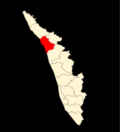

 The legendary seaport where Arab, Chinese and East African traders once converged, Kozhikode was previously the most crucial region of the Malabar Coast. Vasco da Gama landed on its shores in 1498, shooting the region to global fame. Once the capital of the influential Zamorins and a prominent trade and commerce centre, the winds of change have swept over this charming coastal land. The whiff of history continues to permeate the lanes, bazaars and business hubs of Kozhikode. Lush green countryside, serene beaches, historic sites, wildlife sanctuaries, rivers and hills make Kozhikode a popular destination.